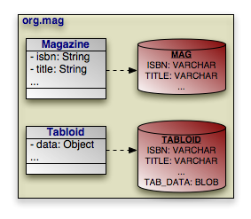

2.13.6.3. Table Per Class
Like the JOINED strategy, the
InheritanceType.TABLE_PER_CLASS strategy uses a different table for each class in the hierarchy.
Unlike the JOINED strategy, however, each table includes all state for an instance of the corresponding class.
Thus to load a subclass instance, the JPA implementation must only read from the subclass table; it does not need to join to superclass tables.

Suppose that our sample model’s Magazine class has a subclass Tabloid.
The classes are mapped using the table-per-class strategy, as in the diagram above.
In a table-per-class mapping, Magazine's table MAG contains all state declared in the base Magazine class. Tabloid maps to a separate table, TABLOID.
This table contains not only the state declared in the Tabloid subclass, but all the base class state from Magazine as well.
Thus the TABLOID table would contain columns for isbn, title, and other Magazine fields.
These columns would default to the names used in Magazine's mapping metadata. Embedded Mapping will show you how to use AttributeOverrides and AssociationOverride s to override superclass field mappings.
@Entity
@Table(name="MAG")
@Inheritance(strategy=InheritanceType.TABLE_PER_CLASS)
public class Magazine {
...
}
@Entity
@Table(name="TABLOID")
public class Tabloid
extends Magazine {
...
}And the same classes in XML:
<entity class="org.mag.Magazine">
<table name="MAG"/>
<inheritance strategy="TABLE_PER_CLASS"/>
...
</entity>
<entity class="org.mag.Tabloid">
<table name="TABLOID"/>
...
</entity>